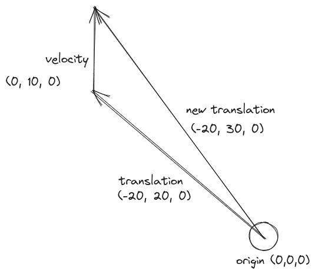

Creating Movement
first we will add a new system to our app:
main.rs
fn main() { App::new() .add_plugins(DefaultPlugins) .add_startup_system(setup_camera) .add_startup_system(spawn_boids_system) .add_system(movement_system) .run(); } ...
the difference between "add_system" and "add_startup_system" is that startup systems only run once when the program is launched. A regular system runs on every frame.
#![allow(unused)] fn main() { ... fn movement_system( time: Res<Time>, mut query: Query<(&mut Transform, &Velocity)> ) { for (mut transform, velocity) in query.iter_mut() { transform.translation += velocity.0 * time.delta_seconds(); } } ... }
our system needs access to the boids transform component (this was part of the "ColorMesh2dBundle" bundle) and our velocity component. we will be changing the transform component to move the boid on the screen. this is why we need it to be mutable. that is what the "mut" keyword means.
this system iterates over all boids and adds the velocity vector to the translation of the boid. here is a diagram:

the reason we use "velocity.0" instead of "velocity" is because our velocity component looks like this:
#![allow(unused)] fn main() { Velocity( Vec3 { x: f32, y: f32, z: f32, } ) }
we want to add the vector inside of the Velocity struct so we need to take our the zeroth element: the vector
the reason we multiply the velocity vector by delta seconds is so that the speed of boids is not tied to the frame rate of the program. delta seconds is the time sense the last frame finished.
if you run the program now, the triangle will move up the screen!
one problem is if we were to change the initial velocity like this:
#![allow(unused)] fn main() { Velocity(Vec3{x: 10.0, y: 10.0, z: 0.0}) }
and run the code, we will see that the triangle doesn't point to where it is headed. It only points up!
to fix this, we need to find the angle the boid should be based on its velocity.

Using trigonometry we know that tan(θ) = opposite / adjacent. so,solving for θ, our boids rotation angle should be atan(velocity.0.y/velocity.0.x)
however there is a big flaw this this approch:

with this example of θ, when we decide velocity.0.y by velocity.0.x we get exactly the same number as our previous example. indeed with this approach out boid would only be pointing up toward the top of the screen even if they were moving downward.
modern programming languages, including rust, have a solution to this. the "atan2()" function. this function will properly find the angle θ, even in the third and fourth quadrants:
#![allow(unused)] fn main() { (velocity.0.y).atan2(velocity.0.x) }
if you were to run this the our boid faces 90 degrees to the left of where its headed.
this is because it assumes that the angle zero is facing left. but when we built our mesh we made it facing up. to fix this we can rotate the angle by 90 degrees by swapping x and y (taking the reciprocal) and then making it negative:
#![allow(unused)] fn main() { (-velocity.0.x).atan2(velocity.0.y) }
to implement this in out code we will add a line that updates the boids rotation every frame:
main.rs
#![allow(unused)] fn main() { fn movement_system( time: Res<Time>, mut query: Query<(&mut Transform, &Velocity)> ) { for (mut transform, velocity) in query.iter_mut() { transform.translation += velocity.0 * time.delta_seconds(); transform.rotation = Quat::from_rotation_z((-velocity.0.x).atan2(velocity.0.y)); } } }
the rotation need a quaternion. this is just how computers store rotation its not important. we use from_rotation_z because its rotating around the z axis (toward and away the screen is the z axis).
here is our program so far:
use bevy::prelude::*; use bevy::render::{render_resource::PrimitiveTopology, mesh::Indices}; fn main() { App::new() .add_plugins(DefaultPlugins) .add_startup_system(setup_camera) .add_startup_system(spawn_boids_system) .add_system(movement_system) .run(); } fn setup_camera( mut commands: Commands ) { commands.spawn(Camera2dBundle::default()); } fn create_triagle_mesh() -> Mesh { let mut mesh = Mesh::new(PrimitiveTopology::TriangleList); mesh.insert_attribute(Mesh::ATTRIBUTE_POSITION, vec![ [0.0, 2.0, 0.0], [-1.0, -1.0, 0.0], [1.0, -1.0, 0.0], ]); mesh.set_indices(Some(Indices::U32(vec![0,1,2]))); mesh } #[derive(Component)] struct Velocity(Vec3); fn spawn_boids_system( mut commands: Commands, mut meshes: ResMut<Assets<Mesh>>, mut materials: ResMut<Assets<ColorMaterial>>, ){ commands.spawn(( ColorMesh2dBundle { material: materials.add(ColorMaterial::from(Color::PURPLE)), mesh: meshes.add(create_triagle_mesh()).into(), transform: Transform { scale: Vec3::splat(100.0), ..default() }, ..default() }, Velocity(Vec3{x: -10.0, y: -10.0, z: 0.0}) )); } fn movement_system( time: Res<Time>, mut query: Query<(&mut Transform, &Velocity)> ) { for (mut transform, velocity) in query.iter_mut() { transform.translation += velocity.0 * time.delta_seconds(); transform.rotation = Quat::from_rotation_z((-velocity.0.x).atan2(velocity.0.y)); } }